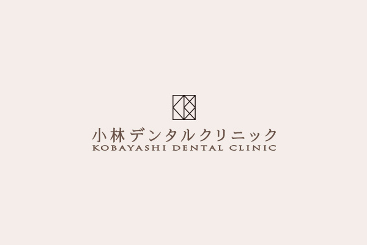

- ホーム
- ホワイトニング
ホワイトニング治療whitening
削らずに歯を白くできます
ブラッシングやクリーニングで改善できない歯の黄ばみには、ホワイトニングがおすすめです。削らずに歯が持つ本来の白さを取り戻すことができます。歯は一生涯使い続けるものであり、美しく、健康的な状態を維持したいものですよね。当院では、より自然な仕上がりを目指して、オフィスホワイトニングとホームホワイトニングの併用を推奨しております。
- 
ホワイトニングの種類
ホワイトニングは「オフィスホワイトニング」と「ホームホワイトニング」の2種類に分けられます。それぞれ特徴が異なるのですが、併用することで効率良く歯を白くできます。より自然に仕上げたい、美しい状態を長く保ちたいという方は、そんなデュアルホワイトニングをご検討ください。もちろん、オフィスホワイトニング・ホームホワイトニングそれぞれ単独での施術も実施しております。
歯科医院で行うホワイトニング
オフィスホワイトニング
歯科医院ですべての処置が完結するホワイトニングです。比較的強い薬剤を用いるので、即効性が高いです。ホームホワイトニングと比較すると、持続性に劣ります。
オフィスホワイトニングの流れ
- 歯の色のチェック
- 歯のクリーニング
- 歯面にホワイトニングジェルを塗布
- 光照射によって薬剤を活性化（複数回）
オフィスホワイトニングはこんな方におすすめ
- 短期間で歯を白くしたい
- 自分で手間や時間をかけたくない
- 近い将来、結婚式などのイベントを控えている
ご自宅で行うホワイトニング
ホームホワイトニング
患者さまがご自宅で行うホワイトニングです。最初に、患者さま専用のカスタムトレーを製作するためにご来院いただきます。その際、ホワイトニングの方法もお伝えします。処方された薬剤を使って、マイペースに歯を白くできます。
ホームホワイトニングの流れ
- 歯の色のチェック
- カスタムトレーの製作
- 歯のクリーニング・自宅での使用方法の説明
- 自宅でホワイトニングを実施
ホームホワイトニングはこんな方におすすめ
- マイペースに歯を白くしたい
- ホワイトニング効果を長持ちさせたい
- 継続して通院するのが難しい
よくある質問
- どのくらい白なりますか？
- 一般的には、歯の色見本の二段階ほど白くなります。ただし、ホワイトニング効果には個人差があるため、あくまで参考程度にお考えください。
- ホワイトニング効果はどのくらい持続しますか？
- オフィスホワイトニングは3～6ヶ月程度、ホームホワイトニングは6～12ヶ月程度です。デュアルホワイトニングを実施することで、より長く持たせることも可能です。
- 歯が変色するのはなぜですか？
- カレーや赤ワイン、コーヒーなど、色の濃い食品を習慣的に摂取していると、歯質に色素が沈着します。加齢によって黄ばむこともあります。
- ホワイトニング剤は安全ですか？
- 当院で行っているホワイトニングは、安全性が保証されている薬剤を用いるため、身体への悪影響はまず生じません。安心して施術を受けていただけます。
| ホワイトニングできないケースはありますか？ |
|---|
|
| ホワイトニング後の注意点はありますか？ |
|---|
|